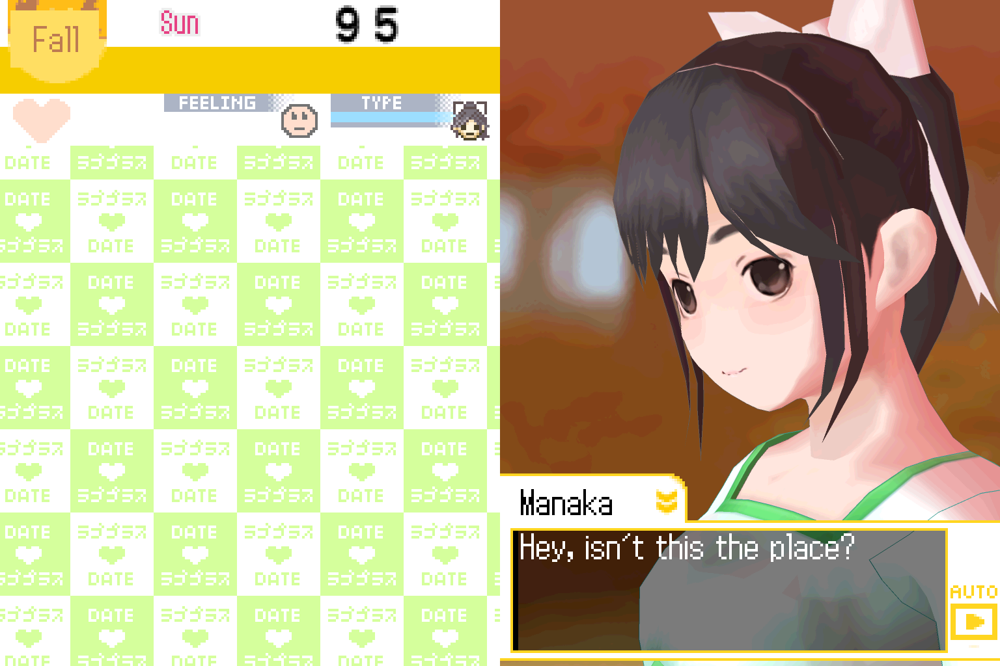

A guide from the lp-engine project
How LovePlus+ works
LovePlus+ came out for the Nintendo DS in 2010: three girlfriends who live on the same clock as you, in a game that never really ends. To bring it to modern computers, lp-engine had to understand it from the inside. This guide writes that understanding down.

Chapters
Each chapter explains one part of the game in plain terms, then links to the functions that do it. Every function name you see opens in the function map, where you can follow what it calls and what calls it.
- 1The machineTwo CPUs, the SDK and NitroSystem underneath, overlays swapped in and out of a few hundred kilobytes.
- 2The shape of the gameOne stack of state machines, a screen manager, the room as a hub, and how a new game reaches the story.
- 3Scripts and eventsThe script VM that plays every conversation, and how the game chooses what happens today.
- 4Real timeThe clock, the calendar, and what the game does when you've been away.
- 5The heroinesModular models, motions by joint name, expressions as texture swaps, and the voice.
- 6The saveEvery block of the battery save and what it remembers about you.
- 7DrawingTwo 2D engines, the 3D pipeline, display captures, toon shading, and how lp-engine draws it sharper.
- 8SoundThe ARM7's sound driver, sequences, and the Siren14 voice codec.
- 9TextFonts, text banks, and how the English translation fits into a game written for Japanese.
- 10The hardware edgesTouch, microphone, the lid, the clock chip, and the wireless that isn't there.
- 11The filesEvery format on the cartridge: the archive, compression and cipher, Nintendo's 2D, 3D, sound and font formats, and Konami's own.
- 12Inside lp-engineExtraction, the interpreter and its native ports, the reimplemented hardware, record and replay, and how it's all checked.
- 13What we don't know yetThe touch scenes, dates, minigames, undecoded fields and unnamed bytes: the honest list.
Where this comes from
The function names started from exact matches against the libraries the game was built with. From there they were worked out function by function, and corrected wherever lp-engine needed them to be right. The function map marks how sure each name is: exact and verified are facts, high and medium are well-supported readings, and low names mark a function's area without claiming to know what it does.
Nothing from the game is here. This site and the symbol files hold addresses, sizes, and our own names and notes, and nothing else: no code or data from the game, the SDK or the libraries. lp-engine itself reads everything game-related from the player's own copy.